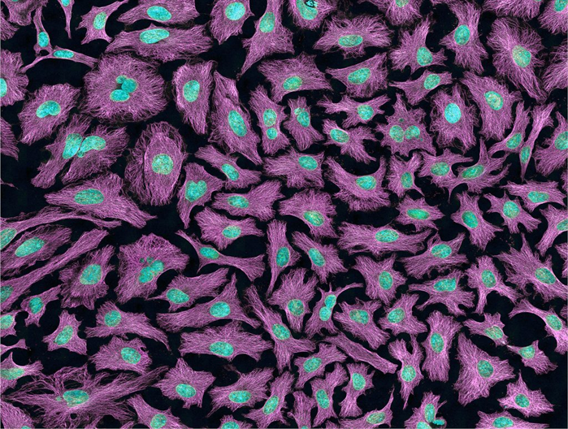

David Baltimore
Nov 13, 2020 | 1 min read

Do Animals Commute?
Feb 02, 2021 | 2 min read
Feb 24, 2021 | 1 min read
Henrietta Lacks (August 1, 1920–October 4, 1951) was a Southern African-American tobacco farmer who developed cervical cancer.
These cervical cells were obtained by Dr. George Gey at John Hopkins in 1951. Among the scientific discoveries that have directed
research in this field, this line of cells would come to be known as one of the most important among them, because it became the
first immortal human cell line, known as HeLa. These “immortal” cells remain “alive”, 60 years after her death, revolutionising
biological and medical research.
These cells have had an unprecedented impact on biological research right from the development of the polio vaccine to
understanding the effect of zero gravity in outer space.
A Cell line is a general term that applies to a defined population of cells that can be maintained in culture for an extended
period of time, retaining stability of certain phenotypes and functions.
Definition from Comprehensive Biotechnology, Z. Li:
Subculturing, also referred to as passaging cells, is the removal
of the medium and transfer of cells from a previous culture into fresh growth medium, a procedure that enables the further
propagation of the cell line or cell strain.
The HeLa cell line was the first successful attempt at immortalizing human-derived cells in vitro.

Figure 1.Multiphoton fluorescence image of HeLa cells with cytoskeletal microtubules (magenta) and DNA (cyan)
The differences between normal cells and HeLa cells:
If you are wondering what was happening in the minds of the researchers when they saw Henrietta Lacks, we need to consider what
they saw when analyzing the cells obtained. Normally, cancer cells would divide a few times and die off before any decent studies
could be done with them. But Henrietta’s just kept on dividing and dividing, so long as they were fed the right mix of nutrients
for them to grow.
Some 70,000 studies have been published involving the use of HeLa cells. At least two Nobel Prizes have been awarded recently
for research involving HeLa cells, one on the link between human papilloma virus and cervical cancer (2008 to Harald zur Hausen),
and the other into the part played by the telomerase enzyme in preventing chromosome degradation (2009 to Elizabeth Blackburn,
Carol Greider, and Jack Szostak).
As for Henrietta’s family, they were kept in the dark about what happened to their ancestor’s unwitting bequest to medical science
until relatively recently, a shocking oversight that led in the US to a change in the ethical ground-rules covering the taking and use
of hospital biopsies without informed consent.
Figure 2.Henrietta Lacks (1920–1951)
Nov 13, 2020 | 1 min read
Feb 02, 2021 | 2 min read